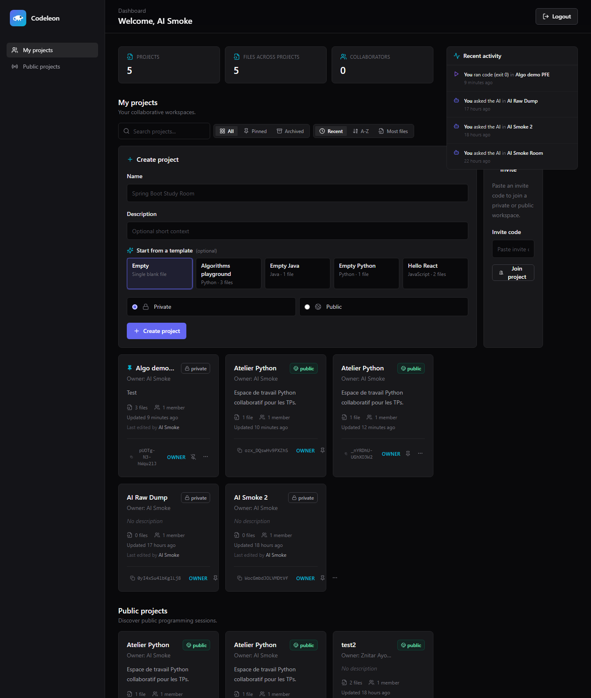
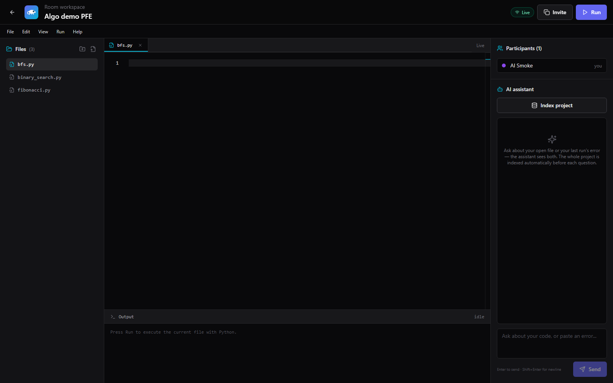

Projet de Fin d'Études · Licence Professionnelle
Un espace de travail dans le navigateur où des équipes éditent le même code en temps réel, exécutent dans un sandbox isolé, et conversent avec un assistant IA local qui voit leur projet.
Codeleon est une plateforme collaborative de programmation accessible depuis un simple navigateur. Plusieurs utilisateurs entrent dans la même room, éditent simultanément les fichiers d'un projet via un éditeur Monaco (le moteur de VS Code), exécutent leur code Python dans un sandbox Docker isolé, et discutent avec un assistant IA local qui lit leurs fichiers et leurs erreurs d'exécution.
Le projet est entièrement auto-hébergé : pas d'appel à une API cloud, pas de modèle propriétaire. Le pipeline d'IA tourne sur la machine via Ollama avec un modèle qwen2.5-coder:1.5b quantifié, et le moteur de recherche vectoriel Qdrant indexe les fichiers du projet pour la Retrieval-Augmented Generation. Cette contrainte — locale, CPU-only, 8 Go de RAM — a guidé chaque décision technique.
La sprint final a livré 17 commits répartis sur sept axes : enrichissement du tableau de bord (cartes, recherche, tri, filtre, épinglage, archivage, templates, flux d'activité), refonte de l'assistant IA (contexte direct, indexation automatique du projet, mémoire des conversations par utilisateur avec relecture par l'owner), durcissement des scripts de développement, et nombreux correctifs UX. La suite de tests backend est verte à 85/85 ; le front-end passe le typecheck TypeScript strict et le build Vite sans avertissement.
Démarrer un projet de code à plusieurs reste lourd. Chaque étudiant doit installer un JDK ou un Python, configurer un IDE (Eclipse, IntelliJ, VS Code), cloner un dépôt, gérer Git, résoudre des conflits, et finir par dire « ça marche chez moi ». Pour un cours d'algorithmique ou un TP de programmation, ce préliminaire coûte plus que l'exercice lui-même.
Les éditeurs cloud existants — Replit, CodeSandbox, Glitch — résolvent ce problème mais sont propriétaires, à abonnement, et envoient le code de l'étudiant à des serveurs distants. Pour un établissement universitaire ou un atelier, c'est rédhibitoire.
Codeleon est une plateforme auto-hébergeable, collaborative, qui démarre en une commande et tient sur le portable de l'enseignant. Un étudiant ouvre un onglet, rejoint une room par code d'invitation, et écrit du code à plusieurs sans installer quoi que ce soit. L'exécution est sandboxée. Un assistant IA local répond aux questions sur le code du projet, sans qu'aucune ligne ne quitte la machine.
La machine de référence : Intel i5-8350U, 8 Go de RAM, sans GPU. Tout le pipeline IA — embeddings, modèle de chat, base vectorielle — doit y tourner sans dégrader l'expérience.
Trois couches isolées et orchestrées localement par Docker Compose. Le frontend n'accède jamais directement aux containers de données ; seul le backend joue le rôle de garde-frontière. L'Ollama runtime et le moteur d'exécution de code vivent dans des containers séparés, sans connexion réseau pour le runner — un container ne peut donc ni sortir, ni atteindre la base.
Le navigateur dialogue avec Spring Boot en REST + WebSocket. Le WebSocket porte le protocole Y.js pour la synchronisation en temps réel des fichiers.
Chaque Run spawn un container Python éphémère, sans réseau, avec timeout dur. Aucun état n'est persisté entre runs.
Indexation automatique des fichiers du projet (chunking + embeddings nomic-embed-text) avant chaque question, recherche top-K dans Qdrant, prompt grounded streamé via SSE.
| FRONTEND | React 18 + Vite | TypeScript strict, Tailwind CSS, design system zinc / signature indigo / cyan. |
| Monaco Editor | Le moteur d'édition de VS Code. 25+ langages avec coloration et autocomplétion de base. | |
| Y.js + y-monaco | CRDT pour l'édition collaborative temps réel sans conflit. | |
| React Query · Zustand | État serveur (cache, invalidation) et état d'auth client. | |
| BACKEND | Spring Boot 3.2.5 | REST controllers, sécurité, WebSocket, sur Java 23. |
| JWT (jjwt) + OAuth2 | Auth par mot de passe et social login (GitHub, Google). Rôle ADMIN pour le dashboard d'administration. | |
| Flyway | Migrations de schéma versionnées (V1 → V7). | |
| Hibernate / JPA | ORM pour 8 entités persistantes. | |
| DATA | PostgreSQL 16 | Source de vérité pour utilisateurs, rooms, fichiers, pins, événements, chat history. |
| Redis 7 | Refresh tokens et sessions transitoires. | |
| IA | Ollama (CPU) | Runtime de modèles locaux. Chat : qwen2.5-coder:1.5b, embeddings : nomic-embed-text (768 dims). |
| Qdrant | Base vectorielle. Une collection unique codeleon-room-files, partitionnée par roomId + path. | |
| EXÉCUTION | Docker (runner) | python:3.12-slim dans un container éphémère, --network=none, mémoire et CPU plafonnés, timeout 8 s. |
| OUTILLAGE | Maven | Build, tests JUnit 5, plugin Spring Boot. |
| Scripts PowerShell | Orchestration du stack en une commande, durcis contre les ports orphelins. |
Le code d'un utilisateur ne peut pas (a) atteindre le réseau, (b) consommer plus que sa part de mémoire/CPU, ni (c) survivre au-delà de 8 s. Trois lignes de défense indépendantes : --network=none, cgroups Docker, process.waitFor(timeout).
Y.js (CRDT) résout les écritures simultanées sans serveur central et sans conflit, garantissant la convergence éventuelle quel que soit l'ordre d'arrivée des messages. Le backend ne fait que relayer les updates et persister un snapshot.
L'écran d'accueil après authentification. Quatre incréments successifs l'ont enrichi : cartes projet avec compteurs réels, recherche et tri côté client, épinglage et archivage par utilisateur, création depuis des templates, et flux d'activité en barre latérale qui se rafraîchit toutes les 30 secondes.

fileCount, memberCount, badge de visibilité, date relative ("Updated 2 hours ago"), bouton de copie de l'invite. Recherche temps réel, tri Recent / A-Z / Most files. RoomResponse dénormalise les compteurs depuis les repos existants.room_pins (user_id, room_id) avec PK composite — épinglage par utilisateur. Colonne archived_at sur rooms — soft-delete propre à la room, owner-only. Filtre toolbar All / Pinned / Archived ; les épinglés remontent toujours en tête.classpath:templates/*.json, chargé une fois au démarrage. Endpoint GET /templates pour le sélecteur, POST /rooms accepte un templateId optionnel qui matérialise les fichiers de structure côté backend.room_events append-only. Six points d'émission : créer/renommer/supprimer un fichier, rejoindre une room, exécuter du code, poser une question à l'IA. La colonne rooms.last_edited_by_id est dénormalisée pour O(1) sur le listing.GET /rooms?archived, GET /rooms/public, POST /rooms, POST/DELETE /rooms/:id/pin, POST/DELETE /rooms/:id/archive, GET /events, GET /templates.
Afficher « Dernière édition par X » sur chaque carte aurait demandé une jointure sur room_events à chaque appel de listing — coûteux quand l'utilisateur a vingt projets. La solution est une colonne en plus sur rooms, mise à jour dans la même transaction que l'emit d'événement. Le listing reste O(1) par carte, la donnée reste consistante.
La room est le cœur de Codeleon. Trois panneaux : le file explorer à gauche, l'éditeur Monaco au centre, l'assistant IA à droite. Plusieurs utilisateurs voient le même curseur et la même sélection ; Y.js fusionne leurs édits en temps réel sans conflit, et le sandbox Docker exécute du Python à la demande.

Onglets ouverts au-dessus de l'éditeur. Le file explorer permet de créer, renommer, supprimer. Chaque fichier détient un Y.Text séparé dans le Y.Doc de la room.
Coller une URL GitHub publique importe les fichiers texte du repository directement dans la room. Le RAG indexe ensuite l'ensemble — là le retrieval gagne son rôle.
Bouton Run en haut à droite. Le code part vers un container Docker éphémère qui le pipe à python -, capture stdout/stderr, et retourne en moins de 8 s.
L'assistant est la fonction signature du projet et l'illustration la plus claire d'une méthodologie d'ingénierie disciplinée : on a construit, mesuré une faiblesse, et raffiné — sans rien jeter du travail initial.
Première itération : un pipeline RAG complet auto-hébergé. Le service RoomFileIndexer découpe le texte d'un fichier en chunks de 500 caractères (overlap 50), demande à Ollama un embedding 768-dim de chaque chunk via nomic-embed-text, et persiste dans Qdrant avec un payload {roomId, path, chunkIndex, text}. À la question, on embed la requête, on cherche les top-K, on assemble un prompt grounded, on stream la réponse via SSE.
Cette première version fonctionne — c'est de l'ingénierie réelle, locale, sans dépendance cloud. Mais en l'utilisant, trois faiblesses apparaissent rapidement.
Un bouton Index n'indexe que l'onglet actif et hardcode path: "main". Toute édition non re-indexée laisse l'IA travailler sur une version périmée.
Le RAG ne voit jamais le stderr du dernier Run. La question naturelle d'un débutant — « pourquoi ça plante ? » — est précisément celle à laquelle l'IA peut le moins bien répondre.
Une room contient 1 à 5 petits fichiers. Faire de la recherche vectorielle pour trouver « les 4 bons chunks parmi 10 » résout un problème qui n'existe pas à cette échelle.
Au lieu de jeter le RAG, on l'a recentré et augmenté. Le pipeline existant garde son rôle de couche de retrieval pour les gros projets importés depuis GitHub. Par-dessus, on a ajouté du contexte direct, automatisé l'indexation, et persisté les conversations. Quatre commits, livrés un par un.
Le modèle par défaut était qwen2.5-coder:0.5b, à la limite de la cohérence pour du raisonnement de code. Passage à qwen2.5-coder:1.5b (toujours quantifié, ~1.2 Go RAM résident — viable sur 8 Go). OLLAMA_KEEP_ALIVE passe de 0 à 5m pour éviter le cold-load à chaque question ; MAX_LOADED_MODELS à 2 pour que le modèle d'embedding et le modèle de chat ne s'évincent plus mutuellement.
~15 minutes, qualité des réponses code mesurablement améliorée.
Le ChatRequest porte désormais trois champs optionnels : activeFilePath, activeFileContent (tronqué côté serveur à 16 ko), lastRunStderr (tronqué à 4 ko). Le system prompt les injecte en plus des extraits RAG. Le frontend les attache à chaque question : le fichier ouvert, l'erreur du dernier Run.
Désormais l'IA répond précisément à « voici mon code, voici l'erreur — corrige-moi ». Vérifié bout en bout : NameError sur print(undefined_var) → l'IA propose le bon fix avec code corrigé.
Le bouton « Index this code » devient « Index project ». Endpoint batch POST /index/all qui traite N fichiers en un appel. Côté frontend, une signature du projet (concat path+content) est calculée ; à chaque envoi de question, si la signature a changé depuis la dernière indexation, on ré-indexe — sinon on saute, gratuit.
L'utilisateur n'a plus de bouton manuel à penser. L'IA voit toujours la dernière version. Pas de doublons (upsert par (roomId, path)).
Migration V7 : table room_chat_messages append-only avec deux index (room+user+date pour la lecture du membre, room+date pour la review owner). RoomChatService persiste la question et la réponse à chaque tour. Un invité ne voit que ses propres messages. Le propriétaire de la room dispose d'un sélecteur de membre — en lecture seule — pour relire la conversation de chacun.
Recharger la page restaure la conversation. Pour le respect de la vie privée des invités, un libellé explicite indique : « Le propriétaire de la room peut lire cette conversation. »
Une sélection des obstacles techniques notables du sprint et la décision qui les a résolus. Chacun a fait l'objet d'un commit séparé avec son message explicatif.
Cause : l'image Docker python:3.12-slim n'avait jamais été pulled. La première exécution déclenche un pull qui dépasse les 8 s de timeout du runner. L'utilisateur ne voit qu'un bouton qui ne réagit pas.
docker pull python:3.12-slim au déploiement initial. À documenter dans le README ; le runner pourrait aussi pré-charger l'image à startup.
Cause : fermer la fenêtre du backend sans passer par stop.ps1 laisse un processus Java orphelin. Le prochain start.ps1 crashe avec « Port 8080 was already in use. »
Nouveau helper Stop-PortListener qui parcourt l'arbre Win32_Process et tue les enfants avant le parent, avec fallback WMI Terminate → taskkill /F. Appelé en début de start.ps1 : les ports 8080 et 5173 sont libérés avant chaque démarrage.
Cause : le stream SSE du backend est propre — capture brute confirmée. Mais Chrome lève TypeError: network error sur fetch.body dès que la connexion SSE se ferme, même proprement, et le catch côté client l'affichait comme erreur.
L'event done est désormais traité comme le signal de succès faisant autorité. Si done a été reçu, toute exception ultérieure est ignorée. Une vraie panne réseau (sans done) lève toujours l'erreur.
Cause : min-h-screen sur le <main> permet à la page de grandir au-delà de la viewport. L'overflow du code fait alors scroller toute la page, file explorer compris.
h-screen + overflow-hidden sur le main, flex-1 + min-h-0 sur les containers internes. Monaco devient le seul élément à pouvoir scroller verticalement ; le file explorer et le panneau AI restent fixes.
Cause : le composant OAuthButtons appelle GET /auth/providers. Si le backend est en cours de démarrage, l'appel échoue, providers = [], et le composant retourne null. Comportement attendu, perception d'un bug.
Comportement laissé tel quel — c'est un signal correct. Documenté dans la procédure de démo : attendre l'affichage de Started CodeleonApplication avant d'ouvrir le navigateur.
Cause : le service Windows com.docker.service en Manual + Stopped. Pas de logs Docker côté %LOCALAPPDATA%.
Start-Service "com.docker.service", puis Set-Service -StartupType Automatic. Vérifié par docker info. À documenter pour la reproductibilité.
start.ps1 affichait « Docker is up » alors qu'il ne l'était pasCause : PowerShell try / catch ne capture pas les codes de sortie des commandes natives. Le docker info échouait silencieusement, le script continuait, et docker compose up crachait son erreur sur l'utilisateur.
Vérification explicite de $LASTEXITCODE après chaque appel natif, avec message d'erreur orienté action (« redémarre WSL », « lance Docker Desktop manuellement »).
Cause : navigator.clipboard.writeText réussissait silencieusement, sans changement visuel. L'utilisateur cliquait à nouveau, persuadé que rien ne s'était passé.
État local copied qui flip à true pendant 1,8 s : icône Copy → Check vert, libellé « Invite » → « Copied! ». Fallback textarea + document.execCommand si l'API Clipboard n'est pas disponible.
Cause : le bouton initial appelait indexRoom(roomId, { path: "main", text: getEditorText() }). Il ne voyait que l'onglet ouvert et écrasait toujours la même clé.
Endpoint batch POST /index/all traitant N fichiers en un appel. Frontend lit chaque Y.Text du Y.Doc client (y compris les fichiers sans onglet ouvert) et envoie l'ensemble. Auto-indexation avant chaque question chat avec une signature du projet pour éviter le ré-embed inutile.
Demande : proposer des templates Maven et Spring Boot dans le sélecteur de projet. Analyse : Maven nécessite l'accès réseau pour les dépendances (incompatible avec --network=none), un dossier projet matérialisé sur disque (les fichiers vivent dans le Y.Doc), et un build de 30 s+. Spring Boot est un serveur — il ne termine jamais — incompatible avec le modèle run-capture-exit.
Refusé dans le périmètre du PFE. Documenté dans le ROADMAP comme évolution post-soutenance avec l'architecture qu'il faudrait (proxy réseau allowlisté, matérialisation tmpfs, processus long-running). Le mémoire le présente comme limite assumée.
type(scope): summary avec un corps détaillé. Le git log devient une chronologie lisible des décisions.any implicite, sans avertissement. npx tsc --noEmit passe sur chaque commit.start.ps1 et stop.ps1 libèrent les ports avant et après, détectent l'absence de Docker, et échouent vite avec un message utile.403 en tentant de lire la conversation d'un pair. Le contrat de vie privée est testé.
Le moteur d'exécution est conçu comme une dispatch table : ajouter un langage = ajouter un case + une image Docker + une commande. Cette structure rend Java single-file (Java 11+), C, C++ atteignables en quelques heures chacun, sans toucher au reste du système.
L'honnêteté de scope est elle-même une décision d'ingénierie. Voici ce que Codeleon ne fait pas aujourd'hui, et pourquoi cela ne sera pas livré avant la soutenance.
Le runner accepte un seul langage à l'exécution. L'éditeur supporte 25+ langages mais le bouton Run ne marche qu'en Python.
Le runner est une dispatch table — ajouter Java, C, C++ est mécanique mais hors scope du PFE.
Incompatible avec --network=none (Maven a besoin du réseau pour les dépendances) et avec le modèle d'exécution court (Spring Boot est un serveur).
Documenté comme évolution post-PFE avec l'architecture requise (proxy allowlisté, matérialisation tmpfs).
Pas d'xterm.js branché à un PTY bash dans la room. ~8 h de travail estimé pour la version Bash MVP.
Stretch goal post-mémoire : le runner Docker existant peut être réutilisé. PowerShell et cmd Windows resteraient hors scope.
Un template crée les fichiers avec leur nom et leur langage, mais le contenu reste vide. Pour pré-remplir, il faudrait soit un encodeur Y.Doc Java, soit une colonne seed_content appliquée à la première connexion WebSocket.
Documenté Pass B (~2 h), post-mémoire si le temps le permet.
Une démo de 5 à 7 minutes qui couvre le cœur du produit, dans un ordre conçu pour faire émerger chaque feature naturellement.
Une commande PowerShell : .\scripts\start.ps1. Docker se lève, backend et frontend s'ouvrent en deux fenêtres, le navigateur s'ouvre sur la page d'accueil.
Login. Optionnellement, OAuth via GitHub ou Google si le compte est lié.
« Algorithms playground » → la room est créée avec fibonacci.py, binary_search.py, bfs.py prêts.
Coller une implémentation de Fibonacci dans fibonacci.py, cliquer Run, observer la sortie dans le panneau Output.
Copier l'invite code, l'ouvrir dans un second navigateur (fenêtre privée), éditer simultanément. Les curseurs et les modifications convergent en temps réel.
Introduire un bug volontaire (variable non définie). Run → erreur. Poser au chat : « pourquoi ça plante ? ». L'IA répond avec le diagnostic et le code corrigé.
Recharger la page de la room — la conversation est restaurée. En tant qu'owner, sélecteur de membre dans le panneau chat → lecture seule de la conversation de l'invité.
Retour au tableau de bord — la barre latérale d'activité montre les événements récents : code exécuté, question à l'IA, fichier créé.
Stack 100 % locale — aucune dépendance externe pour la démo. Une seule machine, une seule commande.
Les 17 commits de la dernière sprint, du plus ancien au plus récent. Chaque entrée a fait l'objet d'un message Conventional Commit avec un corps explicatif.
| abcd683 | feat(dashboard): enrich room cards with file and member counts | Inc 1 |
| 6ffdc08 | fix(room): give the invite button visible feedback when copying | UX |
| b997f96 | fix(scripts): make start.ps1 actually fail when Docker is down | DevOps |
| 92a9bf8 | fix(room): keep editor scroll inside Monaco, not the whole page | UX |
| a40c350 | docs(roadmap): record embedded terminal as a post-memoire stretch goal | Docs |
| 390e22e | feat(dashboard): pin and archive projects | Inc 2 |
| c5ab3ac | fix(security): return 401 JSON instead of the OAuth2 login HTML page | Security |
| 83700e3 | fix(scripts): make start and stop bullet-proof against port-stuck orphans | DevOps |
| e2d0661 | fix(scripts): run-backend.ps1 detects port conflict instead of nuking it | DevOps |
| 8057d16 | chore(scripts): make start.ps1 launch the full stack with no flags | DevOps |
| 2d7c354 | feat(dashboard): create projects from a template catalogue | Inc 3 |
| 0f5f448 | feat(dashboard): activity feed + last-edited-by on project cards | Inc 4 |
| d982162 | feat(ai): give the assistant the open file + last run error as context | AI 0+1 |
| f21a1a5 | fix(ai-chat): stop showing a spurious "network error" after each answer | AI fix |
| cc6911f | feat(ai): index the whole project automatically before each chat | AI 2 |
| ef8319d | feat(ai): persist AI chat history per user, per room | AI 3a |
| 2c19e5c | feat(ai): room owner can review any member's chat read-only | AI 3b |
Référentiel
github.com/Dev14Ayoub/Codeleon
Branche
main · @ 2c19e5c